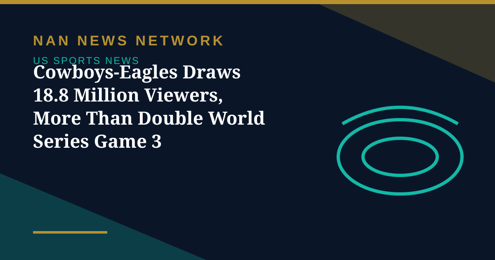
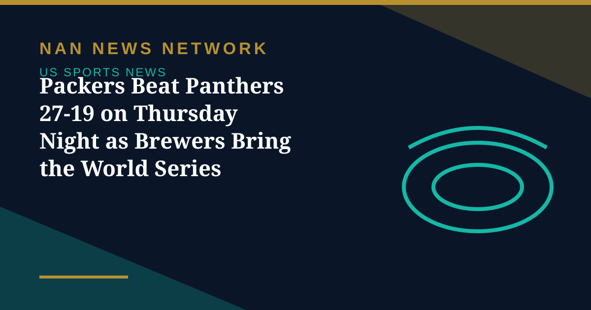
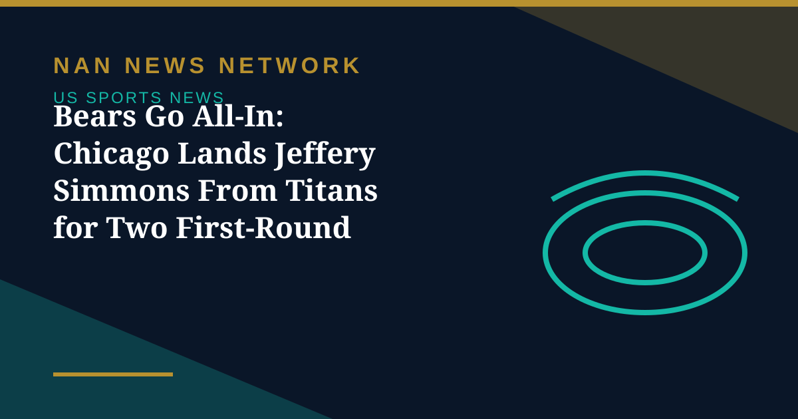
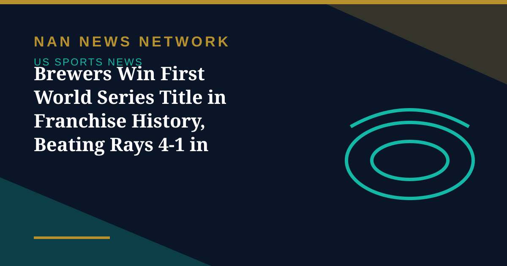
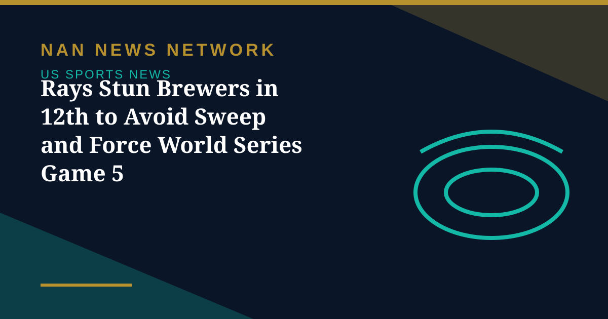
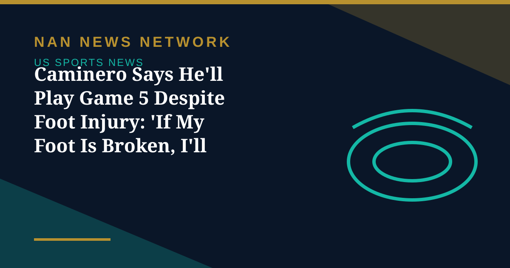

NFL
Cowboys-Eagles Draws 18.8 Million Viewers, More Than Double World Series Game 3
Monday Night Football's Cowboys-Eagles game drew 18.8 million viewers, dwarfing the 8.33 million who watched World Series Game 3 between Milwaukee and Tampa Bay.
United States • Sports
Scores, standings and the stories fans are searching for.

Monday Night Football's Cowboys-Eagles game drew 18.8 million viewers, dwarfing the 8.33 million who watched World Series Game 3 between Milwaukee and Tampa Bay.
Monday Night Football's Cowboys-Eagles game drew 18.8 million viewers, dwarfing the 8.33 million who watched World Series Game 3 between Milwaukee and Tampa Bay.

The Milwaukee Brewers celebrated their first World Series championship with a victory parade in Milwaukee on October 30, two days after clinching the title at Tampa Bay.

Green Bay beat Carolina 27-19 on Thursday Night Football, moving to 5-3, as Jordan Love threw for 288 yards and the Brewers paraded their new World Series trophy at Lambeau Field.

The Chicago Bears acquired All-Pro defensive tackle Jeffery Simmons from the Tennessee Titans on October 29, sending two first-round picks plus a fourth-rounder in the NFL's loudest move of the season.

The Milwaukee Brewers beat the Tampa Bay Rays 4-1 in Game 5 on October 28, clinching the first World Series championship in the franchise's 58-year history.
The Carolina Panthers visit the Green Bay Packers on Thursday Night Football tonight, with both teams coming off humbling losses and fighting for their playoff positioning.

Pinch hitter Ben Williamson's walk-off single in the 12th inning gave Tampa Bay a 4-3 win over Milwaukee in Game 4, keeping the Rays alive in the World Series.

Rays slugger Junior Caminero injured his left foot during the Game 4 rally but vowed to play in Wednesday's must-win Game 5 against Milwaukee.

Milwaukee dismantled Tampa Bay 10-1 in Game 3 behind an eight-run fifth inning, moving one win from a World Series title and a first championship for the franchise.

Dallas bounced back in the division race by beating Philadelphia 38-21 on Monday night, handing the defending champions their fifth straight loss behind three Dak Prescott touchdown passes.

Monday, October 26 is the 2026 sports equinox, a rare night when the World Series, the WNBA Finals, Monday Night Football and regular-season NBA and NHL games all take place.

The New York Giants beat the Houston Texans 27-21 in overtime on Sunday, fueled by a strong debut from J.J. McCarthy and a bounce-back rushing day from Cam Skattebo.

Philadelphia entered Sunday 3–0 and Detroit 2–0, with both teams living up to preseason contender billing — and both managing key absences for the Oct. 25 clash.

Brandon Miller bounced back from one of the worst nights in Hornets history to score 34, as Charlotte held off a late Miami rally and left the star-studded Heat winless.

Week 8 delivered upsets everywhere: UCF beat No. 2 BYU in double overtime, Indiana survived Michigan 13–6 in overtime, and Virginia Tech won 20–16 at Clemson on a late fourth-down touchdown.